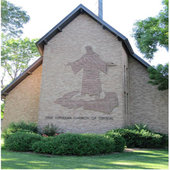

About us
Pr. Bigogo
 Fringilla nisl. Donec accumsan interdum nisi, quis tincidunt felis sagittis eget. tempus euismod. Vestibulum ante ipsum primis in faucibus vestibulum. Blandit adipiscing eu felis iaculis volutpat ac adipiscing accumsan eu faucibus. Integer ac pellentesque praesent tincidunt felis sagittis eget. tempus euismod. Vestibulum ante ipsum primis sagittis eget. tempus euismod. Vestibulum ante ipsum primis in faucibus vestibulum. Blandit adipiscing eu felis iaculis volutpat ac adipiscing accumsan eu faucibus. Integer ac pellentesque praesent tincidunt felis sagittis eget. tempus euismod. Vestibulum ante ipsum primis in faucibus vestibulum. Blandit adipiscing eu felis iaculis volutpat ac adipiscing accumsan eu faucibus. Integer ac pellentesque praesent.
Fringilla nisl. Donec accumsan interdum nisi, quis tincidunt felis sagittis eget. tempus euismod. Vestibulum ante ipsum primis in faucibus vestibulum. Blandit adipiscing eu felis iaculis volutpat ac adipiscing accumsan eu faucibus. Integer ac pellentesque praesent tincidunt felis sagittis eget. tempus euismod. Vestibulum ante ipsum primis sagittis eget. tempus euismod. Vestibulum ante ipsum primis in faucibus vestibulum. Blandit adipiscing eu felis iaculis volutpat ac adipiscing accumsan eu faucibus. Integer ac pellentesque praesent tincidunt felis sagittis eget. tempus euismod. Vestibulum ante ipsum primis in faucibus vestibulum. Blandit adipiscing eu felis iaculis volutpat ac adipiscing accumsan eu faucibus. Integer ac pellentesque praesent.
Our church
Faith Church International is a vibrant church located at 7708 62nd Avenue North in Brooklyn Park City MN 55428 ministering to an international community. Our membership come from many communities within the Twin Cities and the surrounding areas. We have attending members from Kenya, the Republic of Congo; from Togo; from Sierra Leone, from Nigeria, from India, from Zambia, and members who are American born, this is just a microcosm of what Faith Church International has become! . We are part of a global organization with more than 15 plus million members in countries around the world. We believe in the Bible as the Word of God and in Jesus Christ, as the Savior of the world. We run community-oriented ministries. Our worship services are inspirational and power packed with gospel music and preaching. We gather every Saturday at 9:30am for music and Bible study, and then at 11:00am, we have a preaching service with messages that are relevant to real needs in peoples' daily lives. If you are looking for a power-filled worship service where you can encounter the love of God, we invite you to join us in worship and experience this amazing Love. Want to be involved? There are a lot of opportunities for you. Check us out on the web to see what ministries or events are listed on our calender. Come join us and see your faith grow.
About Seventh-day Adventist
Adventists believe a Trinity of three persons--the Father, the Son and the Holy Spirit--make up one God. They made salvation possible when Jesus, the Son, came to earth as a baby in Bethlehem and lived a sinless life in accordance with the Father's will. When Jesus was crucified for the sins of the people of the world and arose from the dead on the third day, victory was won for everyone. When He returned to heaven following the resurrection, Jesus left the Holy Spirit to serve as our Comforter and Counselor. He promised to return to earth a second time to complete His plan of salvation and take His people to heaven. Adventists are among the believers who look forward to that day. Adventists believe that God is concerned with the quality of human life, and that everything--the way we live, eat, speak, think, treat each other, and care for the world around us--is a part of His plan. Our families, our children, our jobs, our talents, our money, and our time are all important to Him.